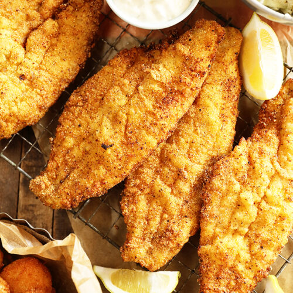

Fried Fish Recipe

Description
Don't let the simplicity of this tasty fried fish recipe fool you: The fillets fry up perfectly cooked inside, with a beautiful golden crust. Haddock and cod are two excellent choices for our fried fish recipe, but tilapia, pollock, catfish, bass, trout, or perch will also yield a beautiful meal. Ready in 30 minutes, this is a perfect meal for a busy weeknight or to serve as a weekend lunch alongside a salad and a few dipping sauces, like classic tartar, Louisiana rémoulade, or chipotle mayonnaise.
Ingredients
- 1/2 cup all-purpose flour
- 1/4 teaspoon paprika
- 1/2 teaspoon salt, or to taste
- 1/4 teaspoon freshly ground black pepper, or to taste
- 1 pound fish fillets (such as haddock, tilapia, or cod)
- 2 cups vegetable oil, for frying
- Lemon weges, tartar sauce, or optional
Steps
- Gather the Ingredients.
- In a shallow bowl or deep plate, combine the flour, paprika, salt, and pepper and mix well.
- Dip 1 or 2 fish fillets into the flour mixture. Make sure they are completely coated on all sides and gently shake off any excess. Repeat the process with the remaining fillets.
- Pour oil into a skillet and heat over medium-high heat to 375 F.
- Working in batches, fry the fish in the hot oil for about 6 minutes on each side, or until golden brown, crispy, and cooked through. Remove and set on a cooling rack to let drain.
- Serve hot with lemon wedges, tartar sauce, or homemade rémoulade sauce, if desired. Enjoy.
Tips for the Crispiest Fish
Try these tested tips to get your fish crispy every time:
- Always pat dry your fish fillets using paper towels to ensure the flour coating sticks well and there are no soggy parts.
- Once the fish is in the pan, never cover it, as you'll end up steaming it and the coating might fall off, leaving behind a greasy fish fillet.
- Keep the oil temperature steady. A thermometer is a great tool to have at hand, especially if you're fond of fried food.
- Don't move the fish in the pan but allow it to fry and release from the pan naturally.